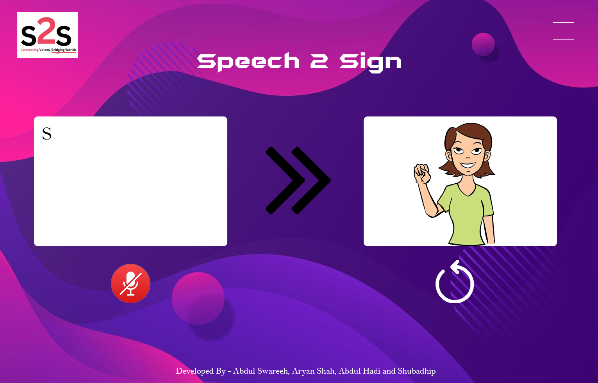

According to
the
World Health Organization(WHO) in 2021, there are over 1.5 billion
people around the world (nearly 20% of the global population) who live with hearing loss. They often face
challenges in understanding individuals without hearing loss.
Hearing loss is a common but often
overlooked disability affecting millions of people
worldwide. It is a condition that disrupts the ability to perceive sounds fully or partially, creating
communication barriers and impacting the overall quality of life for those affected.
The inability to
actively participate
in social gatherings can lead to a sense of alienation. Many people with hearing loss avoid social events,
fearing the embarrassment of misunderstanding conversations or constantly asking others to repeat
themselves. Over time, this isolation can lead to feelings of loneliness and detachment from the community.
Introducing Project Speech2Sign

Our project aims to break
communication
barriers and facilitate better interaction between individuas with hearing loss and the wider
community.
The application uses speech to text to analyze the words and use the data given to it, to
convert the text to Americal Sign Language(ASL). It is developed using HTML,CSS and JavaScript. Our project
can be implemented in news channels and public gatherings.
Developed By Abdul Swareeh, Aryan Shah, Abdul Hadi and Shubahdip